3.计算机学习-设计模式(Java)
Define an object that encapsulates how a set of objects interact.Mediator promotes loose coupling by keeping objects from referring to each other explicitly,and it lets you vary their interaction independently.
翻译:用一个中介者对象封装一系列的对象交互,中介者使各对象不需要显示地相互作用,从而使其松耦合,可以独立的改变它们之间的交互.
优点:把一对多变成了一对一依赖,降低了类间的耦合
缺点:中介者会很复杂,同事越多越复杂.
适用:当多个对象之间耦合逻辑复杂,可以考虑用中介者来简化逻辑
简单来说就是给了一个中枢系统
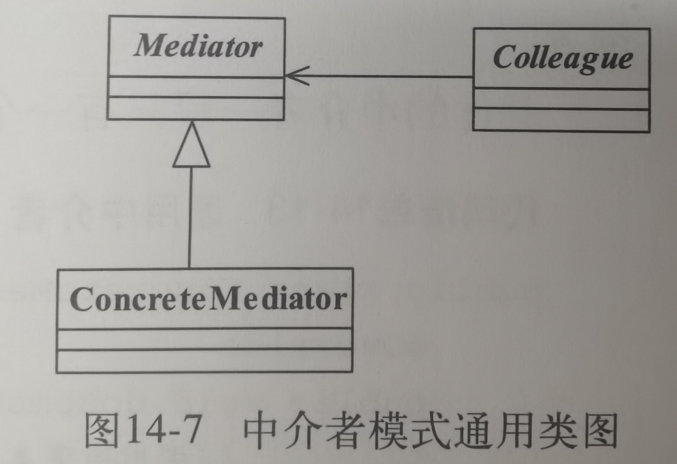
Encapsulate a request as an object,thereby letting you parameterize clients with different requests,queue or log requests,and support undoable operations.
翻译:将一个请求封装成一个对象,从而让你使用不同的请求把客户端参数化,对请求排队或者记录请求日志,可以提供命令的撤销和恢复功能.
优点:
1.类间解耦,调用者和接收者没有依赖关系,调用者只需要调用execute,具体执行具体命令类当中定义好了
2.可扩展性:Command的子类是很容易扩展的
缺点:随着命令数量的增多,Command子类快速膨胀
总结:提供一个Invoker作为责任人来沟通,通过命令类来规范命令的执行

Avoid coupling the sender of a request to its receiver by giving more than one object a chance to handle the request.Chain the receiving objects and pass the request along the chain until an object handles it.
翻译:使多个对象都有机会处理请求,从而避免了请求的发送者和接收者之间的耦合关系.将这些对象连成一条链,并沿着这条链传递该请求,只掉有对象处理它为止.
优点:请求和处理分离,请求者不需要知道最后是谁处理了任务
缺点:性能问题,类递归的循环调用方式必然性能消耗是不小的,然后就是调试麻烦,
通过链条的方式减少单一责任人不执行导致的问题.
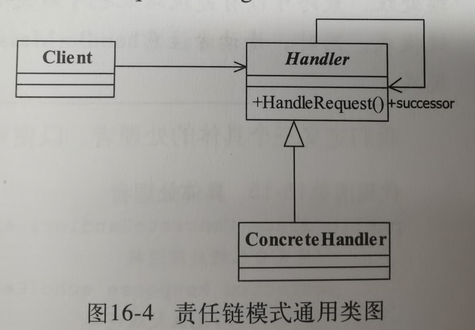
Attach additional responsibilities to an object dynamically keeping the same interface.Decorators provide a flexible alternative to subclassing for extending functionality.
翻译:动态的给一个对象添加一些额外的职责.就增加功能来说,装饰模式相比生成子类更为灵活.
优点:
1.装饰类和被装饰类互相独立,不会相互耦合
2.装饰模式是继承关系的替代方案
3.装饰模式可以动态扩展一个实现类的功能.
缺点:如果装饰了多层,结果会很复杂.不利于调试.
适用场景:
需要扩展一个类的功能,或者给一个类附加功能
需要动态的给一个对象增加功能,后面可以撤销
需要为一批类统一改装或加装功能
总结:动态的增加或改装功能
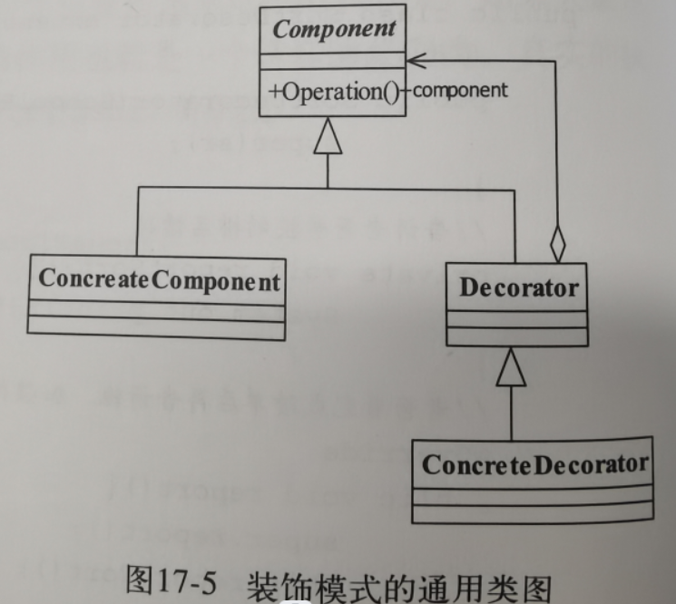
Define a family of algorithms,encapsulate each one,and make them interchangeable.
翻译:定义一组算法,将每个算法都封装起来,并且使它们之间可以互换.
示例:在上面的例子当中:三个具体策略类就是一组算法,他们有一个公共的策略接口,我们把算法用Context封装起来,这样只要是同样的策略接口,当中的具体实现策略是可以互换的.
优点:
1.算法可以自由切换:只要实现抽象策略就成为策略家族的一员,就可以自由切换了
2.避免使用多重条件判断,策略家族对外提供的访问接口就是封装类,是统一的.需要由其他模块决定何种策略
3.扩展性良好:只要实现策略接口就可以扩展策略
缺点:
1.策略类数量多
2.策略类都需要暴露,上层模块需要知道有哪些策略,才能决定使用哪一个策略.
使用场景:
1.多个类只有在算法或行为上稍有不同的场景
2.算法需要自由切换的场景
3.屏蔽算法规则的场景.
总结:通过统一接口实现的快速互换

Convert the interface of a class into another interface clients expece.Adapter lets classes work togethere that couldn;t otherwise because of incompatible interfaces.
翻译:将一个类的接口变换成客户端所期待的另一种接口,从而使原本因接口不匹配而无法再一起工作的两个类能够在一起工作
优点:
1.普适性:只要翻译做的好,可以让两个没有关系的类一起工作
2.封装了复杂性,客户只需要知道Target对象就行了,至于源角色是什么,不需要了解
3.提供了复用性,可以让源角色在不同领域使用
4.灵活性好,因为唯一的关联就是适配器,所以如果不想要,删掉适配器不会带来什么影响.
总结:通过适配器实现对不同类的转接从而发挥新的作用,而不影响原本的功能
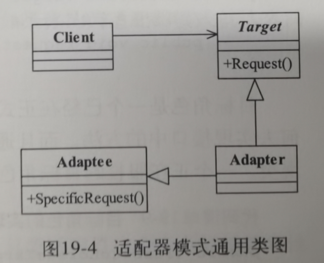
Provide a way to access the elements of an aggregate object sequentially without exposing its underlying representation.
翻译:提供一种方法访问一个容器对象中各个元素,而又不需要暴露该对象的内部细节.
总结:一个几乎所有编程语言都实现了的模式,便利容器元素,了解即可
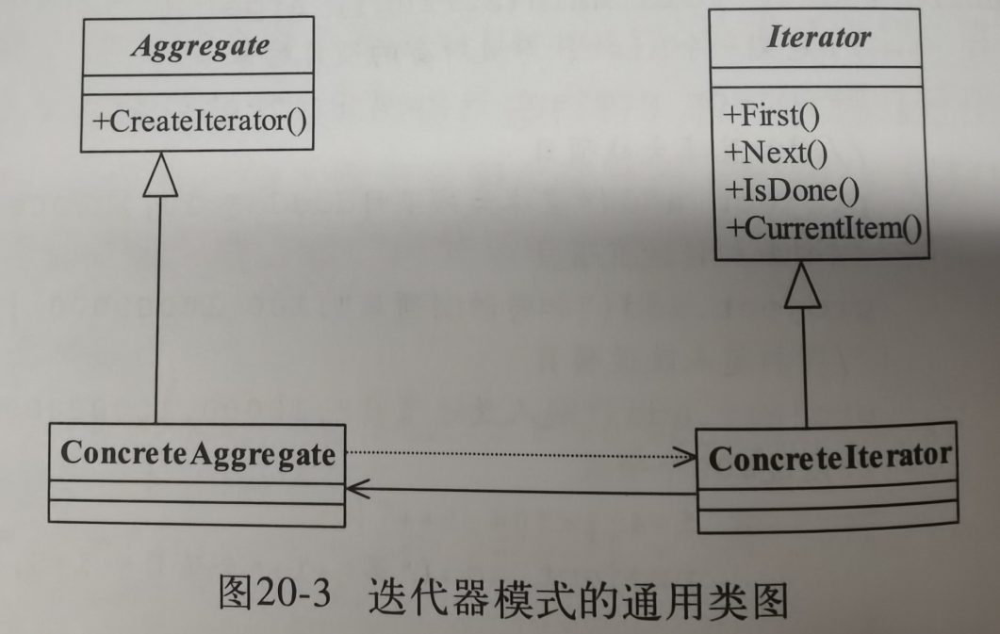
4.Unity学习-HLSL学习
1.切线空间
对于线性代数的理解不足,例子都列错了,怎么转换也没有弄清楚,所以需要等线性代数知识进步以后再来回头考虑
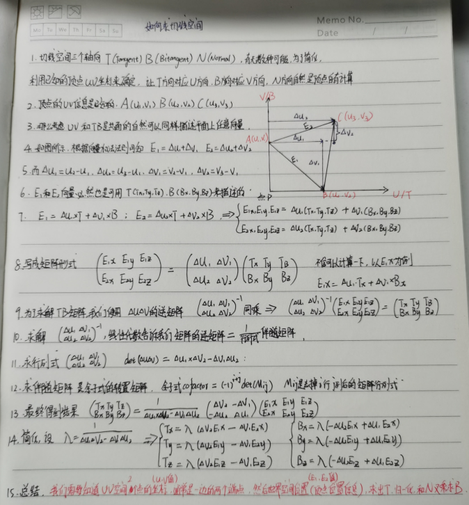
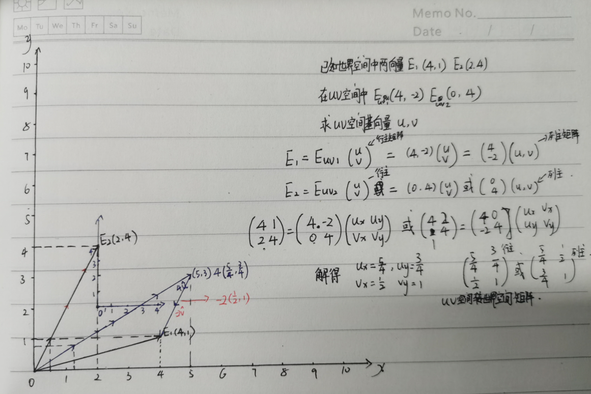
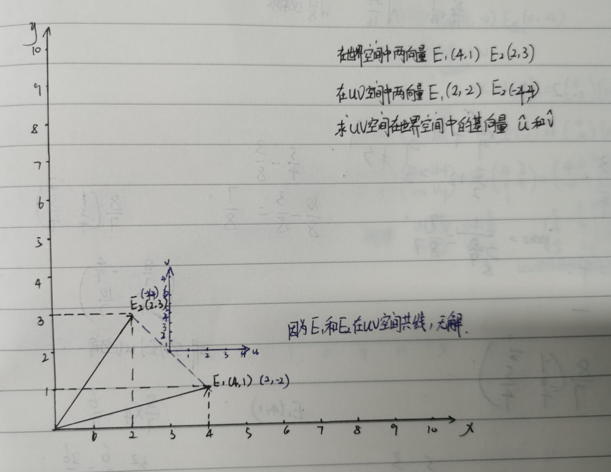
2.切线和副切线
坐标系的不同:OpenGL(右手系)和DX(左手系)
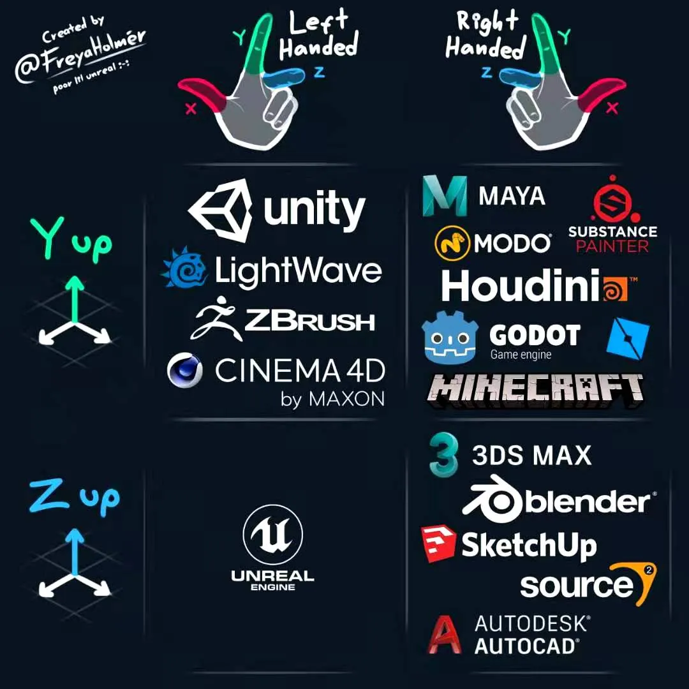
3.其他信息
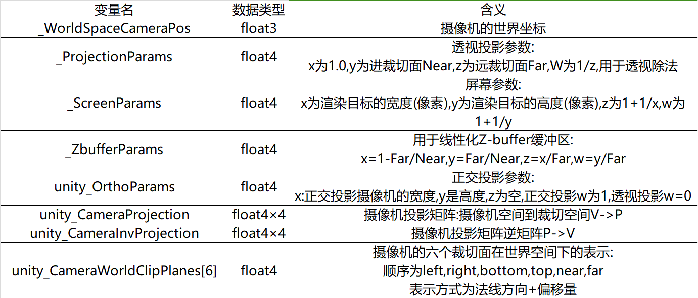
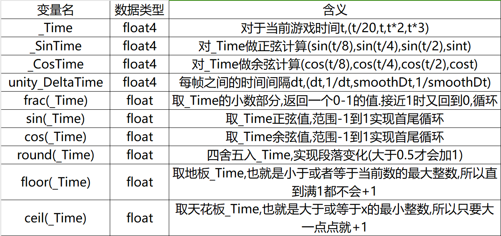
1.算法逻辑
单纯的利用了UV的方式来剔除实现的圆角
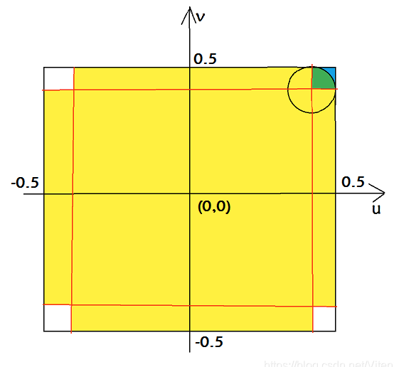
2.结果
会受到不均匀缩放的影响,所以还不算练习完成,等以后回头再考虑
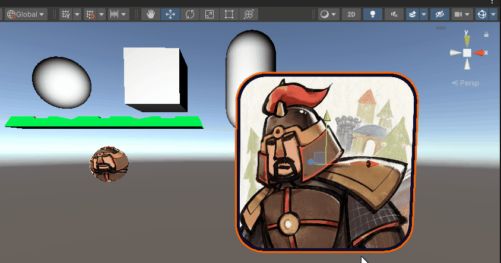
1.目标效果
从现实当中的菲涅尔效应Fresnel effect,摄影当中的轮廓光,抽象出来的效果边缘光RimLight
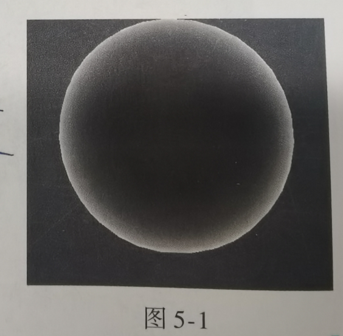
2.如何找到边缘
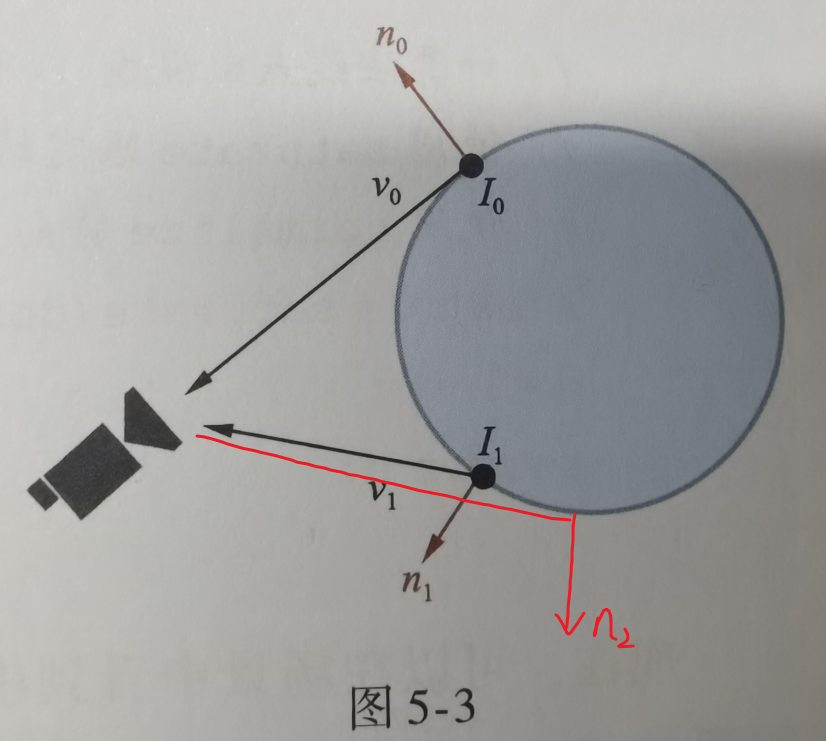
3.点乘和方向的关系
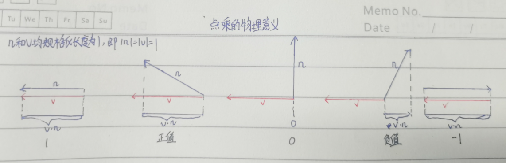
9.计算机--图形学原理与实践(XAML)
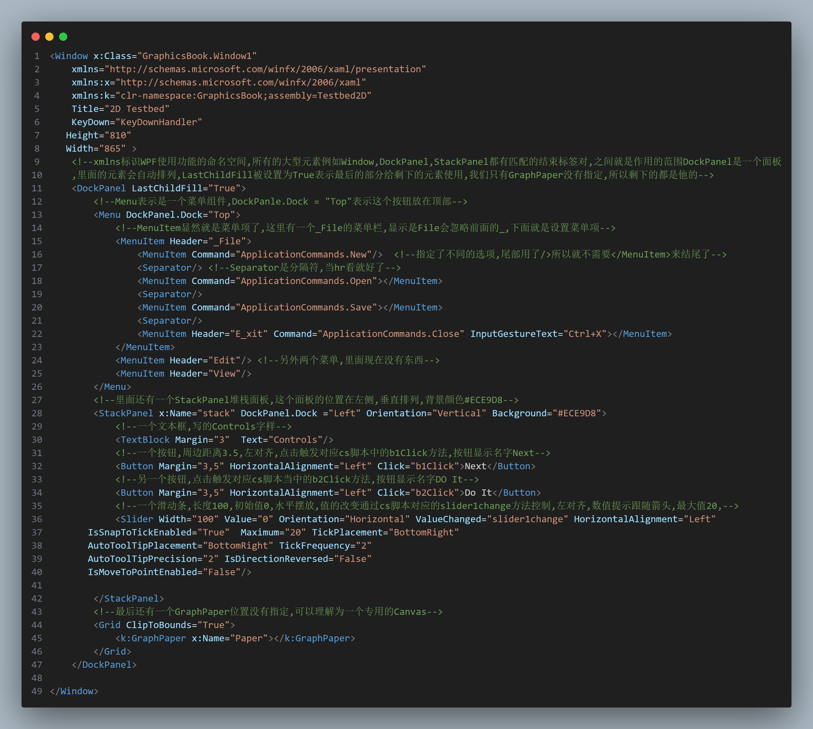

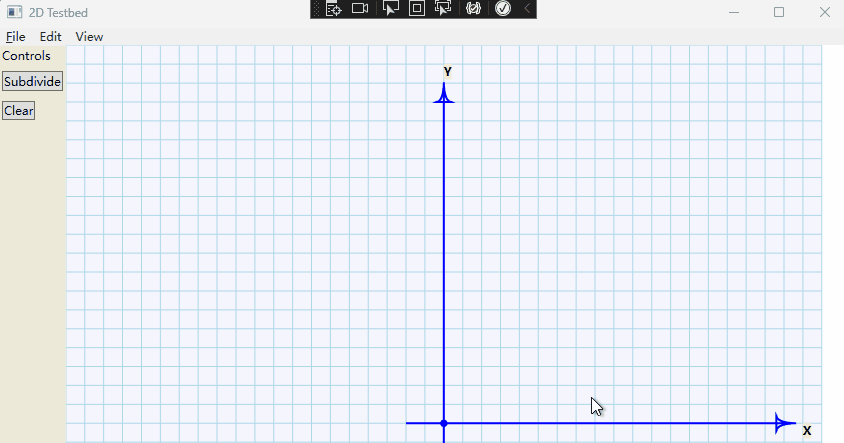
在图形学"完美"到与真实无法区分之前,我们应更好地利用计算和显示资源,致力于生成视觉系统认可的真实,而不必在眼睛无法察觉(或几乎察觉不到)的细节差异上下功夫.
视觉系统有强大的并行处理能力,一方面可容纳简陋或粗糙的数据,但另一方面却对数据非常敏感.眼睛对某些类型的瑕疵极为敏感,例如闪烁,高对比..
在心理方面,如果最近某物体曾在你面前出现过,则面对一堆杂物时,你会很快注意到其中与它相似的物体.
大脑的视觉皮层功能:已知的早期视觉(视觉信号处理的最初几步)可检测明度的尖锐对比.表面朝向和颜色的细小变化,以及空间频率(每厘米敏感变化的次数)
总结就是我们擅长检测并留意"模式"的变化,对朝向,颜色或频率变化的检测是局部的(对相邻物体的颜色不同敏感.)
人眼在黑暗区域更加敏感,亮度的变化比绝对值要更受关注,对物体的感知与光照环境几乎无关.